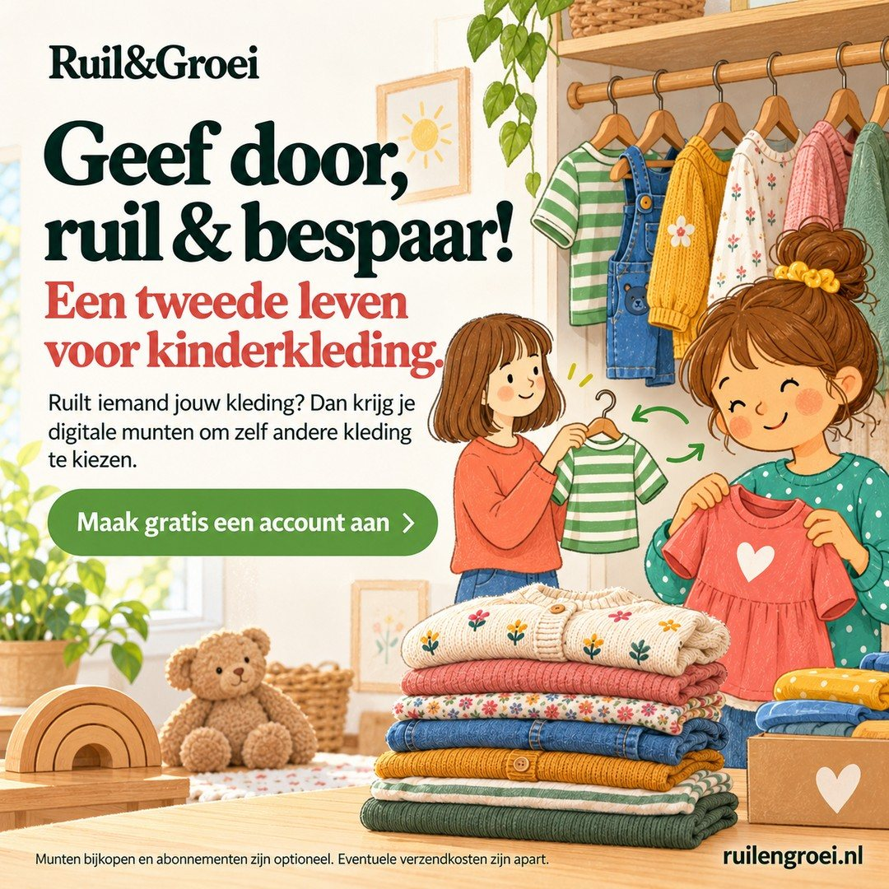
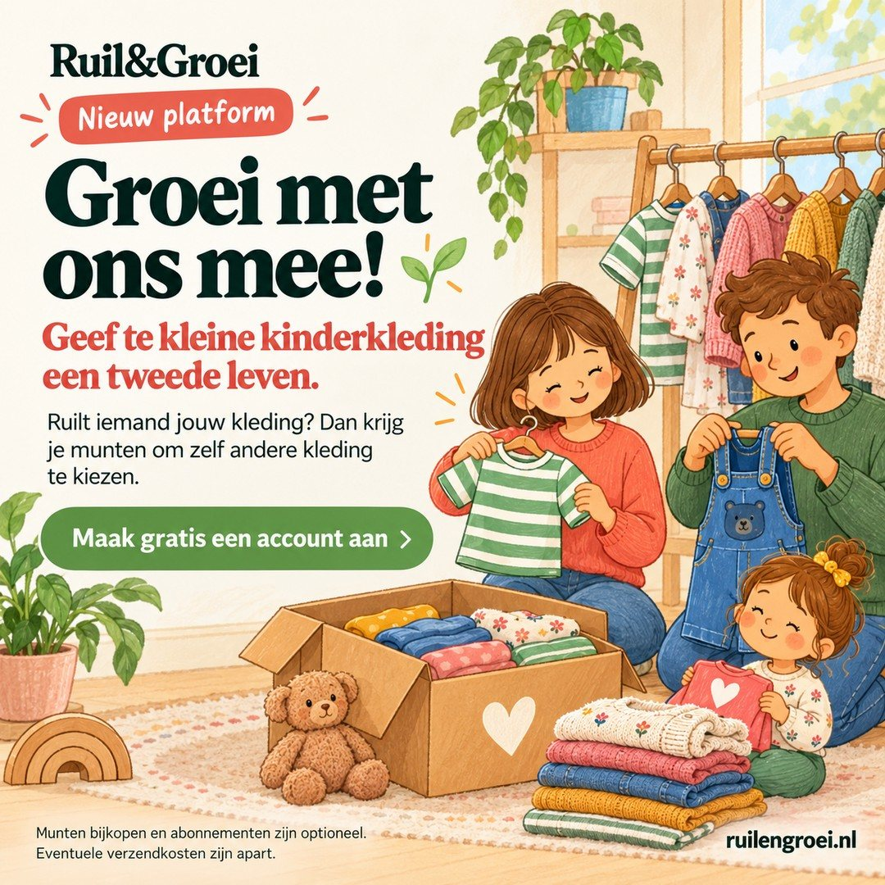
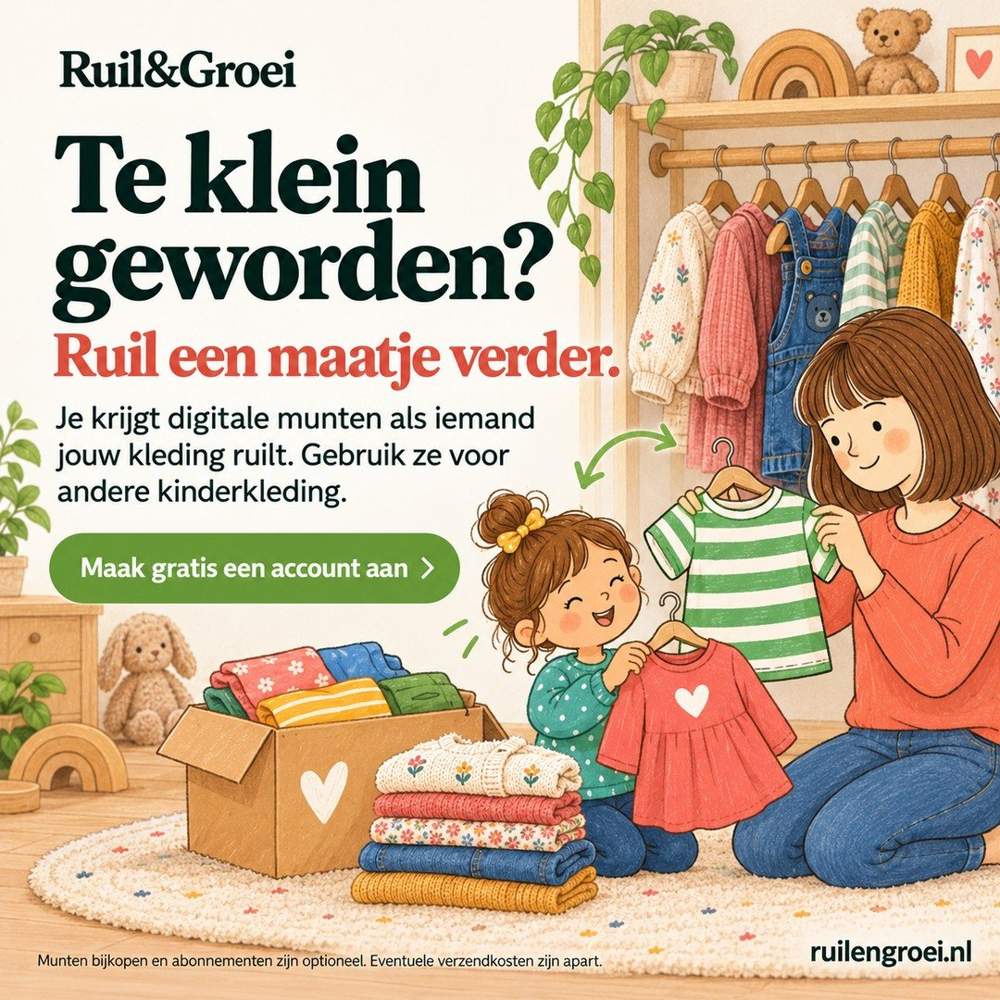
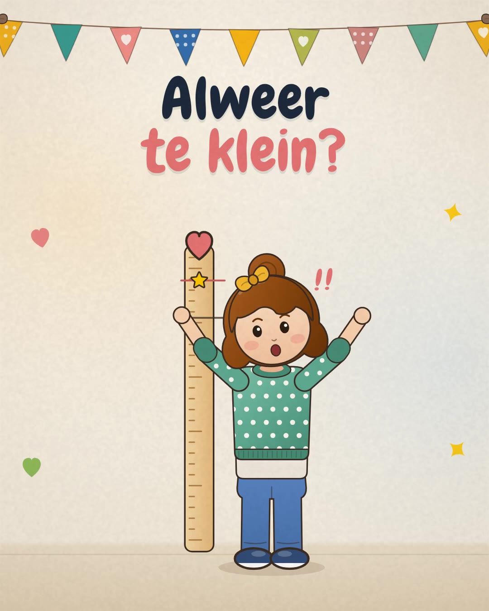
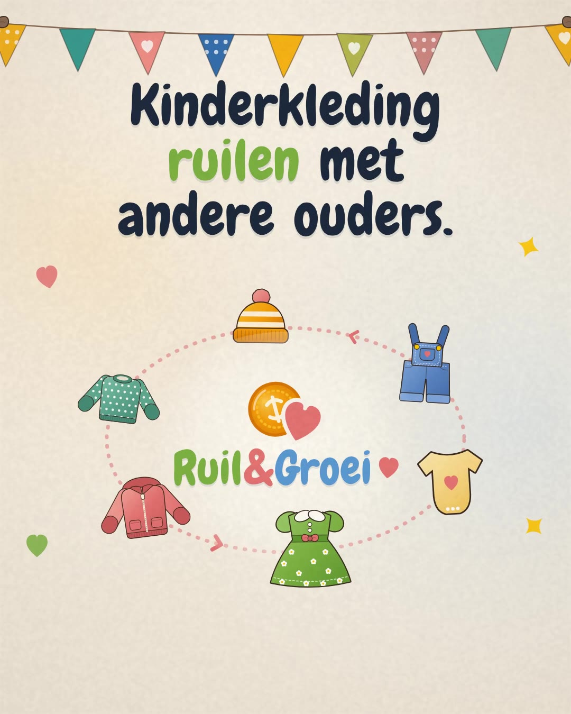
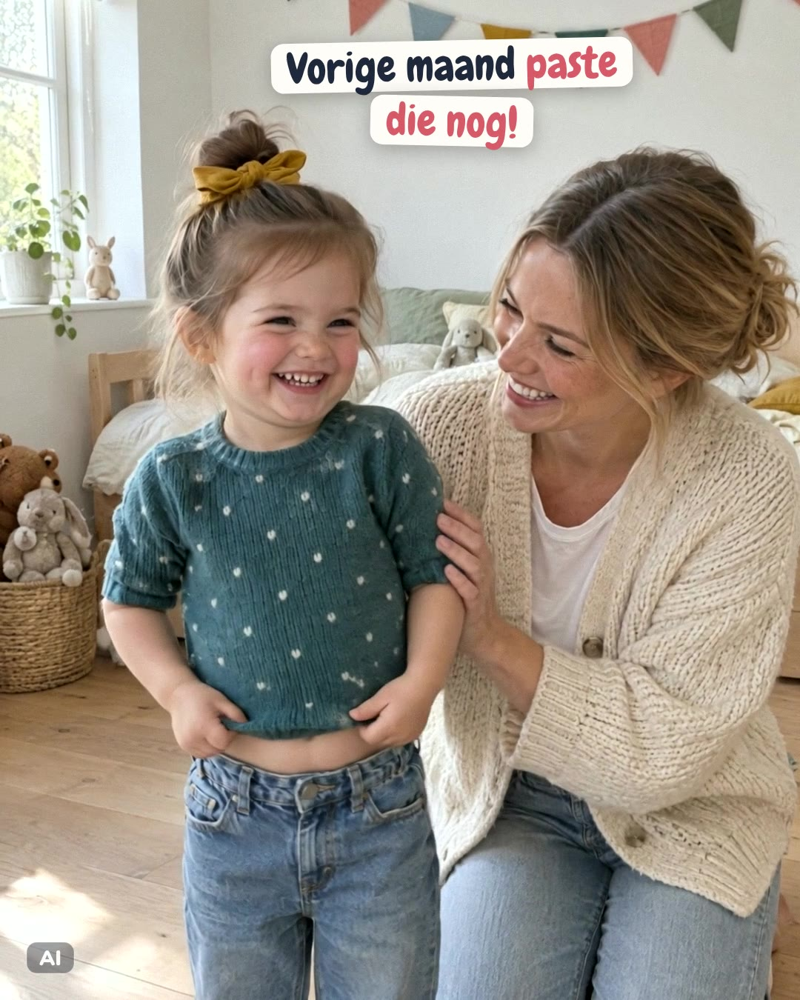

Statische ad 1 van 3
Geef door, ruil & bespaar!
- Advertenties S1-A · S1-B · S1-C
Campagne · go-live
creatives & teksten
Alle advertenties voor de livegang op één plek: 3 statische ads en 3 video’s, met de teksten erbij. Elke statische ad draait met dezelfde drie teksten, en elke video ook. Zo zien we welke tekst én welke creative het beste werkt.
Opzet
Een advertentie heet creative + tekst: S2-B is statische ad 2 met tekst B. Klik op een creative om ernaartoe te gaan.
| Creative | Formaten | Tekst A | Tekst B | Tekst C |
|---|---|---|---|---|
| Statisch | ||||
 S1Geef door, ruil & bespaar! | 1:19:1616:9 | S1-A | S1-B | S1-C |
 S2Groei met ons mee! | 1:19:1616:9 | S2-A | S2-B | S2-C |
 S3Te klein geworden? | 1:19:1616:9 | S3-A | S3-B | S3-C |
| Video | ||||
 V1 · 0:17Alweer te klein? | 4:59:16 | V1-A | V1-B | V1-C |
 V2 · 0:23Zo werken de munten | 4:59:16 | V2-A | V2-B | V2-C |
 V3 · 0:21Vorige maand paste die nog! | 4:59:16 | V3-A | V3-B | V3-C |
Statisch
Drie creatives, elk in 1:1, 9:16 en 16:9. Klik op een afbeelding om hem groot te bekijken.
Statische ad 1 van 3
Statische ad 2 van 3
Statische ad 3 van 3
Deze drie teksten draaien bij alle drie de statische ads.
Primaire tekst
Ze groeien. Hun kleding groeit niet mee. 👕💚
Geef te kleine kinderkleding door via Ruil&Groei. Ruilt iemand jouw kleding? Dan ontvang je digitale munten waarmee je zelf andere kinderkleding kunt kiezen.
Zo begint de volgende maat bij kleding die nog prima een ronde mee kan.
👉 Maak gratis een account aan.
Kop
Ruil een maatje verder
Beschrijving
Geef door en ontdek de volgende maat.
Primaire tekst
Te klein geworden, maar nog veel te leuk om in de kast te laten liggen? 💛
Dat fijne truitje of favoriete jurkje kan een ander kind weer blij maken. Zet het op Ruil&Groei en ontvang digitale munten zodra iemand jouw kleding ruilt. Die gebruik je om zelf andere kinderkleding te kiezen.
Geef mooie kleding een tweede leven. Maak vandaag gratis een account aan. 🌱
Kop
Te klein? Geef het door!
Beschrijving
Kinderkleding ruilen met digitale munten.
Primaire tekst
Wat bij de één te klein is, past bij de ander precies. 🌱
Op Ruil&Groei helpen ouders elkaar aan de volgende maat. Plaats kinderkleding die niet meer past, ontvang munten wanneer iemand jouw kleding ruilt en kies daarmee andere kleding uit.
Doe mee en laat kinderkleding verder groeien. 💚
👉 Maak gratis jouw account aan.
Kop
Groei met Ruil&Groei mee
Beschrijving
Gratis account. Ontdek het platform.
Video
Elke video staat er in twee formaten: 4:5 voor de feed en 9:16 voor Stories & Reels. Klik bij ‘Tekst in beeld’ op een moment om de video daar te laten beginnen.
Video 1 van 3
Tekst in beeld
Klik op een moment; de video die je het laatst startte begint daar.
Video 2 van 3
Tekst in beeld
Klik op een moment; de video die je het laatst startte begint daar.
Video 3 van 3
Tekst in beeld
Klik op een moment; de video die je het laatst startte begint daar.
Deze drie teksten draaien bij alle drie de video’s.
Primaire tekst
Ruilen met iemand die niets in jouw maat heeft? Dat kan, met munten. 🪙
Zo werkt Ruil&Groei:
1️⃣ Zet kinderkleding die niet meer past gratis online.
2️⃣ Neemt een ander gezin het? Dan krijg jij munten.
3️⃣ Met je munten kies je zelf de volgende maat.
Ophalen of versturen regel je samen in de chat.
👉 Maak gratis een account aan.
Kop
Zo werkt ruilen met munten
Beschrijving
Gratis account, geen provisie.
Primaire tekst
Doos vol te kleine kleding? Daar zit de volgende maat al in. 📦
Zet wat niet meer past op Ruil&Groei. Neemt een ander gezin het? Dan krijg jij munten. Daarmee kies je zelf kinderkleding die wél past.
Een opgeruimde kast, kleding die verder gaat en weer iets dat past. 💚
👉 Maak gratis een account aan.
Kop
Zo wordt te klein weer passend
Beschrijving
Ruil kinderkleding met munten.
Primaire tekst
Steeds een nieuwe maat kopen? Ruilen kan ook. 🌱
Kinderkleding past vaak maar een paar maanden. Op Ruil&Groei ruilen ouders wat te klein is geworden: neemt een ander gezin jouw kleding, dan krijg je digitale munten. Daarmee kies je zelf de volgende maat.
Gratis account en geen provisie.
👉 Maak gratis jouw account aan.
Kop
Ruilen in plaats van kopen
Beschrijving
Nieuw ruilplatform voor ouders